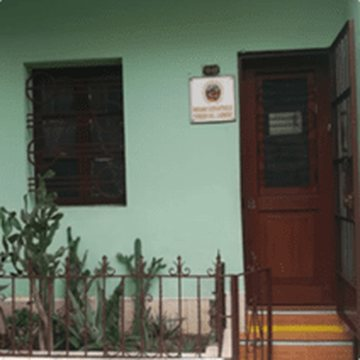
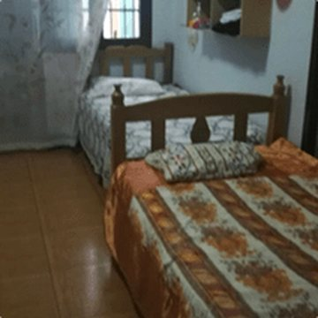
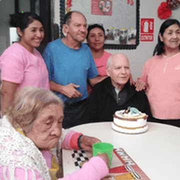

Más de 10 años cuidando a adultos mayores con médico de cabecera, personal capacitado y un ambiente cálido, limpio y seguro.
Nuestros cuidados se basan en el respeto a la dignidad e individualidad de cada residente.



Escríbanos y le contamos cómo es un día en nuestro hogar. También puede visitarnos.